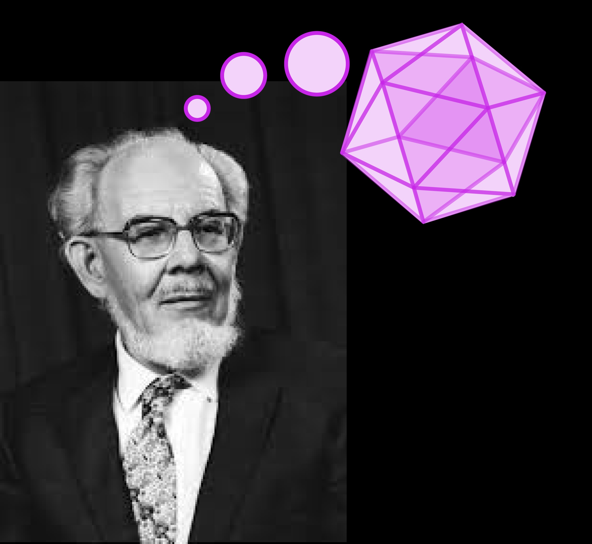
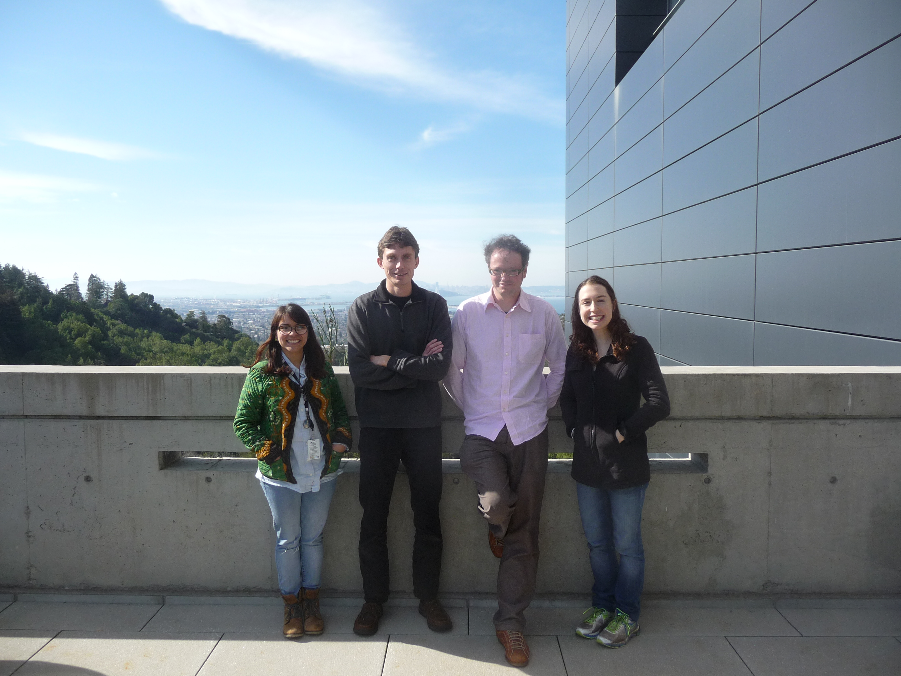
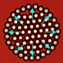
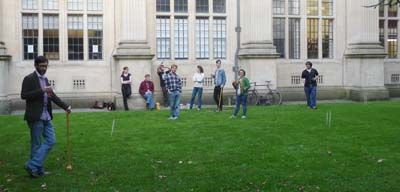

|
Recent
Autumn 2016. Key prediction by Bristol Physicist Sir Charles Frank is finally tested.
Successfully: fivefold symmetry does suppress crystallisation.
Press release and
Nature Communications article.
Winter 2016. The "colloidal washing machine" is selected for the cover of Nature Physics.
This device enables controlled transmission of torque at the smallest scale yet achieved -
a `"nanoclutch". Press release and Nature Physics article.
|
|

|
 |
|
 |
|
New project with the groups of Steve Whitelam and Jeff Urban at the Molecular Foundry
in sunny Berkeley, CA. The project is to realise a new form of soft material predicted by Steve Whitelam. Royall group studen Ioatzin Rios de Anda (left) spends
2 months working in the Molecular Foundry.
|
|
Spring 2015.
Our understanding of the glass transition just got a little bit better.
We show how particles "talk to one another" which may resolve the controversy between structrural
and dynamic lengthscales.
Press release and
Nature
Communications article.
Review article "The role of structure in dynamical arrest" is published in Physics Reports,
selected by the Web of Science as a top 1% cited article.
PDF download.
We have released the topological cluster classification algorithm for structural analysis..
Upcoming
meetings
CECAM Workshop, Lausanne, Switzerland. July 12-14th.

|
|

Royall Group Croquet match.
Victory to Antonia, Charlotte and Francesco. |
|
|
|
|
>>For older items please click here.
What's the game all about?
We combine particle-resolved studies of nanoparticles with computer simulation to tackle outstanding questions in condensed matter. Liquids of nanoparticles which can be resolved at the particle level obey the same statistical mechanics as atoms. For example, critical phenomena in nanoparticles are entirely analogous to those in molecular liquids, with the advantage that this exotic behavior can be studied at room temperature and pressure, due to the special interactions between nanoparticles [link].
The fate of metastable liquids is among the grand challenges of condensed matter. Metastable liquids underlie nucleation of crystals [self-assembly] and the glass transition. In the case of the latter, it is not known whether there is a glass transition in the thermodynamic sense [materials are termed glasses once they become "viscous enough"]. We are aided in unraveling these challenges by the topological cluster classification, our unique tool for decomposing amorphous materials into a zoo of 33 different clusters. The prevalence and lifetimes of these clusters tells us about the possibility of the emergence of an "ideal glass phase" in a deeply supercooled liquid, and also provides insight into nucleation pathways when materials crystallize or melt [link].
Metastable liquids exhibit a host of unexpected phenomena. Nanoparticle liquids undergo sedimentation under gravity and laning (like pedestrians on pavements).
|